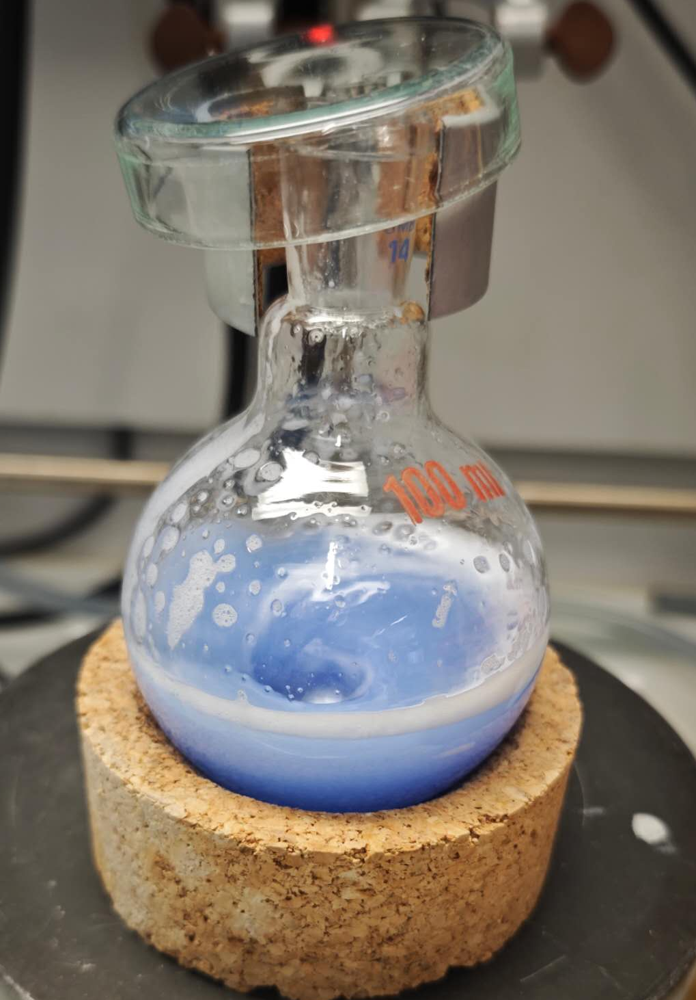
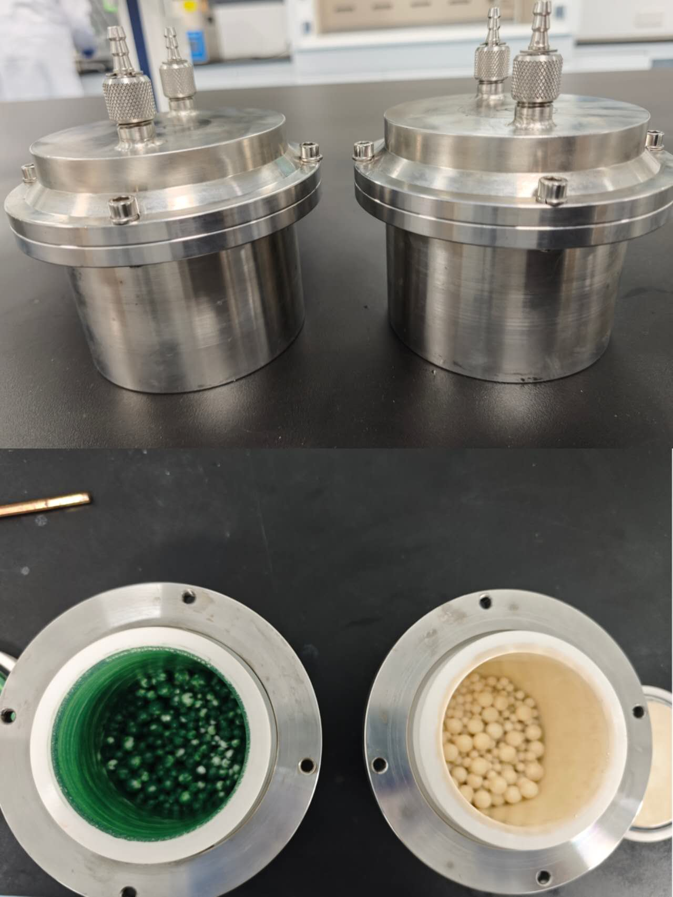
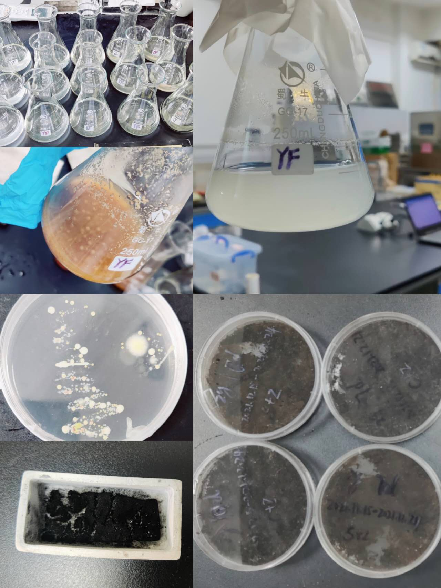

★ Research Projects
Selected research experience
Switzerland

Dynamic Cu Exsolution from SrTiO₃ for CO₂ Hydrogenation
Paul Scherrer Institute · Visiting PhD Research
Operando XPS · in situ XRD · Cu exsolution · Oxygen vacancies · CO₂-to-methanol
This work focuses on understanding the dynamic structural reconstruction of Cu-doped SrTiO₃ catalysts under hydrogen atmosphere. By combining operando XPS, in situ XRD, Autochem, and complementary characterization methods, investigate how oxygen-vacancy formation, Cu exsolution, surface Sr enrichment, and catalyst reconstruction evolve under reaction conditions and collectively govern catalytic behavior.
Zhejiang University

Mechanochemical Preparation of Oxygen-Vacancy Catalysts for Chlorobenzene and NOx Removal
Zhejiang University · Doctoral Research
Mechanochemistry · Mn–Ce oxides · Oxygen circulation · NH₃-SCR · CVOC oxidation
Developed a mechanochemistry-driven strategy for engineering Ce-based catalysts, establishing a hierarchical catalyst evolution framework from interface engineering to defect and nano-island engineering, and revealing the roles of interfacial electronic coupling and dynamic oxygen cycling in the efficient and sulfur-tolerant synergistic abatement of NOₓ and chlorinated organic compounds.
South China University of Technology

Microorganism-Assisted Nitrogen Doping of Porous Carbon for VOC Adsorption
South China University of Technology · Master’s Research
Biochar · Microbial nitrogen fixation · Pore engineering · VOC adsorption
This work uses microorganism-assisted nitrogen fixation and pore-structure regulation
to prepare nitrogen-doped porous carbon, clarifying how nitrogen functionalities and
hierarchical porosity enhance VOC adsorption capacity and selectivity.